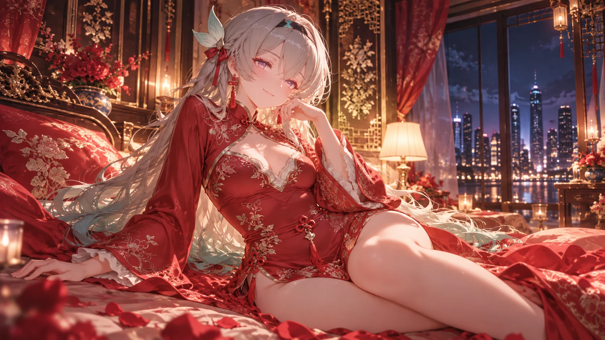

H.
心之所向
MY PERSONAL SPACE
北京时间
正在校准…
网站已运行
正在计算…
只看风景
慧欣的小窝
WELCOME TO MY LITTLE WORLD
心有所向，
皆是
喜欢。
在故事与画面之间，
留一处属于自己的小天地。
F
Fansky
图包小店铺 · 尚未开张
进入
P
Pixiv
我的插画空间
进入
M
MMD
我的 AI 聊天作品主页
进入
D
Discord
加入我的 DC 群
进入
X
X
专属 X 账号
进入
✎
约稿
联系我聊聊你的想法
联系
YOUR LITTLE COMPANION
慧欣的小窝
×
点一下挥手，停一会儿歪头。
也可以把我拖到你喜欢的位置。
显示慧欣
目光跟随鼠标
大小
140
动作速度
10
打个招呼
回到原位
返回主页
LET’S CREATE TOGETHER
约稿联系
×
点击下方账号即可复制，期待你的想法。
QQ 号
2272193119
复制
DC 用户名
momomo6723
复制
请长按或选中下方账号复制